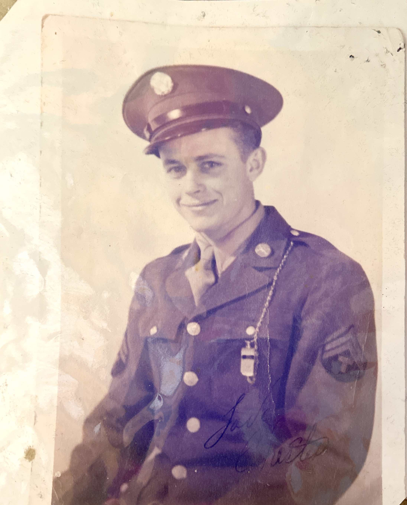

A Soldier's Words Home
These letters, written during the Second World War, represent the correspondence between Corporal Chester Shiver and his mother, Mae Shiver, back home in Bluff Springs, Florida. Each letter is a window into daily life during wartime—the mundane details, the hopes, the fears, and the unwavering connection to family that sustained so many through those difficult years.
Chester served in Europe, with letters coming from locations including Neckargartach, near Heilbronn, Germany. These precious documents have been carefully preserved, scanned at high resolution, and transcribed to share with future generations of the Shiver family and beyond.
✦ The Letters ✦
Coming Home Soon
"Mother, I think I get to come home next month. I'm supposed to leave around the 15th..."
More Letters Coming
Additional letters are being scanned and transcribed for the archive...
More Letters Coming
Additional letters are being scanned and transcribed for the archive...
More Letters Coming
Additional letters are being scanned and transcribed for the archive...
About This Archive
This digital archive contains letters written by CPL Chester Shiver during World War II to his mother, Mrs. Mae Shiver, in Bluff Springs, Florida. Each letter has been carefully scanned at high resolution and transcribed using OCR technology, then manually verified for accuracy.
These letters represent an important piece of family history, preserved here for future generations to understand and appreciate the sacrifices made during the war.